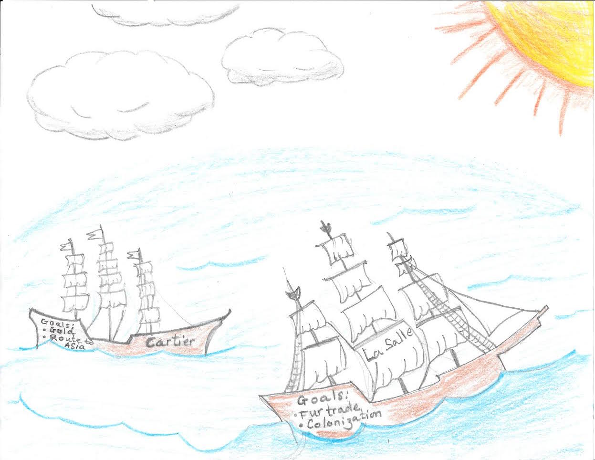
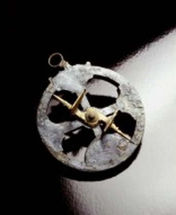
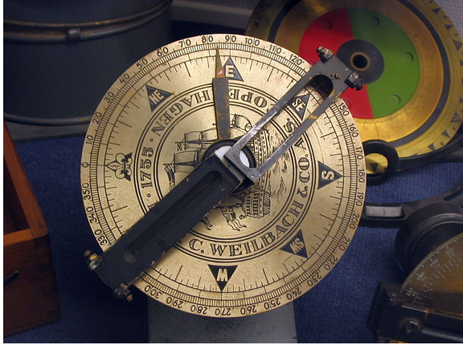
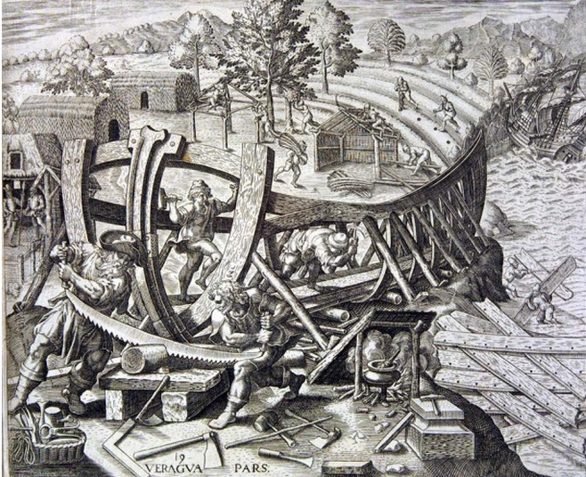

Many of you know the story of our discovery. It all started in 1534 when our holy ruler King Francis I sent the courageous Jacques Cartier to search for the western route to the Spice Lands of the East (Gascoigne). We needed to assure ourselves that those Portuguese animals did not hoard all of that gold from their trade with India, lest we consider ourselves inferior to that laughingstock of a nation, Portugal (Gascoigne). This could not be allowed by God. So, He sent our King a vision of a western path to the eastern lands. Our intelligent king recognized the signs and immediately sent Cartier to the St. Lawrence River to go to the east (Gascoigne). As we now know, there is no path to the east from the west. But even his magnificence’s errors led to greatness. Cartier found the indigenous natives and began friendly relations with them in the name of France. These relations were crucial to the development of our fur-trading relations with the natives (Gascoigne). In my opinion, France found an untapped gold mine that rivaled that of the spice trade. Powered by their new found wealth, New France expanded to be the largest European territory in the New World (Gascoigne). Our land was flourishing.
But it was not to be. Those British slobs came and stole our land away from us (“French Colonial Empires”). They took our homes and our livelihoods. It is time that we fight back. Resentment against the British is growing across the New World. Even their own citizens in the Americas are turning against them. Rumors of Revolution have swirled across the Atlantic border (“French Colonial Empires”). A war is starting. And we need to pick a side.
I know that some among our ranks have suggested that we side with those British tyrants and help them subdue their 13 problem children (“French Colonial Empires”). I don’t believe this to be the correct course of action for two reasons. First of all, we are French. If we side with the British, then their tyranny will be infinite and France will never regain the seat of power as God had intended. We will be throwing all of our history away. Forever. Therefore, that is not an option. The second reason is that supporting the 13 english colonies will lead to Britain’s end in the New World (“French Colonial Empires”). Once these colonies earn their freedom, we shall watch them implode amongst themselves and swoop up their land in the aftermath. France shall become the leader of the New World as was always intended. We must side with the Americans if France is ever to be great again as God intended (“French Colonial Empires”).
War is coming. We must side with the Americans. We may have to call it the American Revolution, but we all know that it will be known to history as the Ascension of France. We must fight. We fight for our history. We fight for our homes. We fight for our livelihoods. And we fight for France. The time of reckoning has arrived. The time to act is now.
Letters to the Editor
by Sashank Thupukari
Q: "Why do us French have such a friendly relationship with the Indians?"
We are definitely the Natives well during our time in North America. Land is not what we wanted. Rather, we had come for the Fur Trade. We had more of a sybiotic relationship...
On the left is our famous explorer Jacques Cartier. During his time in the New World, he started an amiable relationship with the the head of and Iroquois tribe, Chief Donnacona. However, Cartier soon started to treat them harshly. He took ten Iroquois as hostages and forced them to come back with him to France. We were told that he hoped that the Iroquois stories of gold and other valuable minerals would convince the King of France, Francis I, to fund another one of his voyages (“Jacques Cartier”). Because he took hostages, we were given a false impression that the Native American were weak and could be defeated easily.
One the right is another one of our famous explorers, Robert La Salle. He was famous for establishing various fur trading outposts. He was actually acted kindly towards people indigenous to the New World. He was extremely interested in their various languages and dialects. He was also was fascinated with their various stories of mystical lands were yet to be discovered (“Robert La Salle”). He was able to show us the Native Americans were normal people just like us

Comparison
Created by Jeffery Diep
One the left is one of our most distinguished explorer, Jacques Cartier. When he went to the New World, his main goal was to try and find a route of asia and to find gold and spices along with other riches (“Jacques Cartier”). This was the main goal of many of our early explorers. However, as time went on, explorers like La Salle had other goals when going to the New World. The new explorers wanted to colonize the new world and were more interested in fur trade than for looking for gold or a route to Asia. While they both of them wanted to find a way to earn more money and expand our countires influence, the interested shifted from gold to fur (“Robert La Salle”).
Technology Review
by Antonio Chan
We as Frenchmen are extremely proud of our explorers Jacques Cartier and Samuel de Champlain who colonized Canada and founded Quebec respectably, but what about the technology that allowed them to get there in the first place? Without technology such as the magnetic compass, the astrolabe, and the actual ship they sailed with, we would have spread our proud french influence to the colonies in the new world.
Astrolabe

The astrolabe was originally invented by Hipparchus, a greek astronomer and mathematician, some time around 190-120 BCE (“Astrolabe”). The astrolabe was used to find the ships angle relative to the star Polaris.
With the ability to know their current location in comparison to Polaris, our explorers and sailors were roughly able to pinpoint their location with reasonable accuracy (“Astrolabe”).
Compass

The compass is a device that allows the user to determine in which direction he or she is travelling in by using a magnetized object that changes with the magnetic fields of the Earth. Compasses had existed for thousands of years well before the age of discovery, however in 1274, the Venetians created the first compass that had practical uses by using a magnetized needle and a compass card to show the direction (“Compass and The Compass Rose”). Before the compass, sailors would determine direction by using a large and noticeable landmark or the sun and moon. With the introduction of the modern compass our sailors are able to determine their location quicker and more accurately.
Caravel

The Caravel is a medium sized ship that was created in around the 1440s. These ships weighed anywhere from 50 to 200 tons and have excellent speed and maneuverability (“Caravel”). It has many different uses such as cargo ships, warships, patrol ships, and pirate ships(“Caravel”). It’s hull was designed to have a rounded bottom so that it allows for increased space that cand be used to carry goods and supplies (“Caravel”).
Lanteen Sails
The caravel is our ship of choice when it comes to exploration but how does it propel itself across the ocean? The answer to that is with lanteen sails. While it’s origin is cloudy we nonetheless can thank the Arabs or the people of the Mediterranean for their wonderful invention (“The Lanteen Sail in World History”). Due to its triangular shape, the lanteen sail catches the wind better then the primitive square sail, because of this ships equipped with lanteen sailsare able to glide across the water while those with square sails stall (“The Lanteen Sail in World History”).
Interview with our resident expert Alphonse
by Abishek Ramakrishnan
Interviewer: Hello there sir how is it going on this fine, fine day?
Alphonse: After many years of hardship the dust has finally settled indeed it is a fine day.
Interviewer: Hardships? Would you like to expand on that?